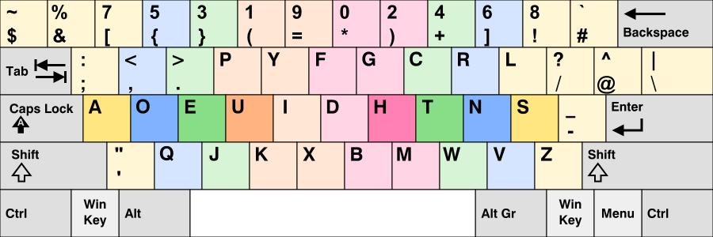

Programmer Dvorak typing tutorial
Programmer Dvorak is a modification of
Dvorak keyboard layout
which moves the characters that programmers usually need closer to the fingers (and moves digits a bit away). It also re-arranges
digits in certain order, putting odd numbers on the left and even ones on the right (this is actually how digits in
original Dvorak layout
were positioned.

(image taken from Wikipedia)
Original QWERTY layout was initially designed to prevent the keys of old typewriters from jamming.
The keys have been placed in random, inefficient way for one sole purpose - to slow down a typist.
Dvorak layout was invented in 1936 by
August Dvorak after years of research. August Dvorak has also
published a book, Typewriting Behavior, which is in-depth
analysis of the process of typing.
A very nice and funny description of the history of QWERTY and Dvorak layouts is given in a comic book, Dvorak Zine
This typing tutorial covers base Dvorak layout and, in addition to that, parts of the layout that are Programmer Dvorak - specific
(characters and symbols). For base Dvorak course this tutorial uses magnificent ABCD lessons written by Dan Wood. This base course
include 29 lessons. Lessons 30 - 52 cover Programmer Dvorak layout aspects (lessons for typing digits and special characters such as &[(%# etc. - everything from Number row).
This site is a free software,
its source code can be found on GitHub under
GNU General Public License, version 3.
Programmer Dvorak typing tutorial utilizes a jQuery plugin
which allows to create arbitrary typing tutor user interfaces. This plugin is also a free software
Please send your comments and suggestions to denis[dot]k1985[at]gmail[dot]com, I'll really appreciate it!
Authored by Denis Kniazhev
Base Dvorak course (created by Dan Wood, original is here)
Lesson 1: Introducing U and H: Home row, Index fingers
Lesson 2: Introducing E and T: Home row, Second fingers
Lesson 3: Comprehensive: E, H, T, U
Lesson 4: Introducing O and N: Home row, third fingers
Lesson 5: Comprehensive, including O and N
Lesson 6: Introducing A and S: Home row, fourth fingers
Lesson 7: Comprehensive, including A and S
Lesson 8: Introducing I and D: Index finger stretching in the home row
Lesson 9: Comprehensive, including I and D (entire home row)
Lesson 10: Introducing P and G: First fingers reaching up
Lesson 11: Comprehensive, including P and G
Lesson 12: Introducing . and C: Second fingers reaching up
Lesson 13: Comprehensive, including . and C
Lesson 14: Introducing , and R: Third fingers reaching up
Lesson 15: Comprehensive, including , and R
Lesson 16: Introducing ' and L: Fourth fingers reaching up
Lesson 17: Comprehensive, including ' and L
Lesson 18: Introducing Y and F: Index fingers stretching up
Lesson 19: Comprehensive, including Y and F (full upper/home rows)
Lesson 20: Introducing K and M: Index fingers reaching down
Lesson 21: Comprehensive, including K and M
Lesson 22: Introducing J and W: Second fingers reaching down
Lesson 23: Comprehensive, including J and W
Lesson 24: Introducing Q and V: Third fingers reaching down
Lesson 25: Comprehensive, including Q and V
Lesson 26: Introducing ; and Z: Fourth fingers reaching down
Lesson 27: Comprehensive, including ; and Z
Lesson 28: Introducing X and B: Index fingers stretching down
Lesson 29: Comprehensive, including X and B
Programmer Dvorak extension for Number Row
Lesson 30: Introducing (, * and =: Number row, index fingers
Lesson 31: Introducing } and ): Number row, second fingers
Lesson 32: Comprehensive: (, *, =, }, )
Lesson 33: Introducing { and +: Number row, third fingers
Lesson 34: Comprehensive, including { and +
Lesson 35: Introducing [ and ]: Number row, fourth fingers
Lesson 36: Comprehensive, including [ and ]
Lesson 37: introducing & and !: Number row, fourth fingers
Lesson 38: Comprehensive, including & and !
Lesson 39: introducing $ and #: Number row, fourth fingers
Lesson 40: Comprehensive, including $ and #
Lesson 41: Introducing 1, 9 and 0: Number row, index fingers
Lesson 42: Comprehensive, including 1, 9 and 0
Lesson 43: Introducing 3 and 2: Number row, second fingers
Lesson 44: Comprehensive, including 3 and 2
Lesson 45: Introducing 5 and 4: Number row, third fingers
Lesson 46: Comprehensive, including 5 and 4
Lesson 47: Introducing 7 and 6: Number row, fourth fingers
Lesson 48: Comprehensive, including 7 and 6
Lesson 49: Introducing % and 8: Number row, fourth fingers
Lesson 50: Comprehensive, including % and 8
Lesson 51: Introducing ~ and `: Number row, fourth fingers
Lesson 52: Comprehensive, including ~ and `
{kind=link}